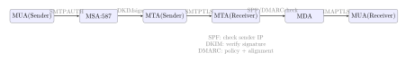

Chapter 18: Email Security¶
Email is the primary attack vector for initial access in the majority of breaches. Despite decades of patching, SMTP was designed without authentication or confidentiality. This chapter builds a complete picture of email security—from transport encryption and sender authentication to end-to-end encryption and forensic header analysis.
18.1 Email Architecture¶
Understanding how a message flows through the email infrastructure is a prerequisite for understanding where attacks occur and where controls apply.
Definition 18.1 (Email Infrastructure Components)
-
MUA (Mail User Agent) – Client software: Outlook, Thunderbird, Gmail web.
-
MSA (Mail Submission Agent) – Accepts mail from authenticated users; enforces policies; port 587 (STARTTLS) or 465 (SMTPS).
-
MTA (Mail Transfer Agent) – Routes mail between domains via SMTP (port 25); implements SPF/DKIM/DMARC checking.
-
MDA (Mail Delivery Agent) – Delivers to mailbox; runs spam/AV filters (SpamAssassin, ClamAV).
-
MRA (Mail Retrieval Agent) – Serves mail to MUA via IMAP (port 993 TLS) or POP3 (port 995 TLS).

18.2 SMTP Transport Security¶
Definition 18.2 (STARTTLS)
STARTTLS is an opportunistic TLS upgrade mechanism. The receiving MTA advertises STARTTLS in its EHLO response; the sending MTA issues a STARTTLS command and upgrades to TLS. Because the initial negotiation is unencrypted, a man-in-the-middle can strip the STARTTLS capability (downgrade attack), causing fallback to plaintext delivery.
Definition 18.3 (MTA-STS (RFC 8461))
MTA Strict Transport Security publishes a DNS TXT record (_mta-sts.example.com) pointing to an HTTPS policy file that specifies: MX hostnames, TLS mode (enforce vs testing), and policy lifetime. Sending MTAs that support MTA-STS fetch this policy and refuse to deliver over plaintext, defeating STARTTLS stripping.
18.3 Sender Policy Framework (SPF)¶
Definition 18.4 (SPF (RFC 7208))
SPF lets domain owners specify which IP addresses are authorised to send email on behalf of their domain. The receiving MTA performs a DNS TXT lookup on the MAIL FROM domain and compares the connecting IP against the SPF record. SPF authenticates the envelope sender, not the From: header visible to the user.
Example 18.1 (SPF Record Syntax)
# DNS TXT record for example.com
v=spf1 ip4:203.0.113.0/24 include:_spf.google.com -all
# Mechanisms:
# ip4:203.0.113.0/24 -- authorise this IP range
# include:_spf.google.com -- include Google's SPF record (for GSuite)
# -all -- hard fail all other senders (recommended)
# ~all -- soft fail (mark as spam, still deliver)
# ?all -- neutral (no policy, not recommended)
# SPF lookup limit: maximum 10 DNS lookups per evaluation
# Exceeding the limit causes "PermError" (treated as fail by strict receivers)
18.3.1 SPF Limitations and the DMARC Bridge¶
SPF has three fundamental weaknesses that practitioners need to understand before relying on it as a security control.
Envelope sender vs. header sender.
SPF checks the MAIL FROM address (the envelope sender, also called the return-path), not the From: header that appears in the user’s inbox. These can be completely different domains. An attacker can send a message with MAIL FROM: attacker@attacker.com (which passes SPF for attacker.com) while setting From: ceo@victim.com. Most email clients display only the From: header. SPF passes, the message looks like it came from the victim’s CEO, and the user has no way to tell. This is display name spoofing exploited in every Business Email Compromise (BEC) campaign.
+all misconfiguration.
+all means “any IP is authorised to send for this domain” — effectively disabling SPF. Surprisingly common in large organisations that use many third-party sending services and, rather than properly enumerate them, reach for +all to stop delivery failures. Any organisation with +all has no SPF protection at all. Auditing SPF records across a domain portfolio regularly is a basic hygiene task that turns up this misconfiguration repeatedly.
The 10-lookup limit and SPF flattening.
RFC 7208 limits evaluation to 10 DNS lookups. The include: mechanism triggers one lookup per included record, and each included record may itself include further records. Large organisations that send through many SaaS platforms (Salesforce, Marketo, SendGrid, Mailchimp, a transactional email provider, a helpdesk platform) exhaust the 10-lookup limit easily. When a receiver hits PermError from exceeding the limit, strict receivers treat it as an SPF failure, causing legitimate mail to be rejected. The workaround is SPF record flattening: periodically resolving all include: chains to their constituent IP ranges and publishing them as static ip4: and ip6: ranges. This solves the lookup limit but requires automation to stay current as upstream providers rotate their IP ranges.
DMARC as the bridge.
None of these SPF limitations matter as much when DMARC is in place. DMARC requires alignment: the domain in the SPF MAIL FROM (or the DKIM d= tag) must match the From: header domain. This closes the envelope-vs-header gap. An attacker whose SPF-passing MAIL FROM is attacker.com while the From: shows victim.com fails DMARC alignment on the SPF check. They would need both domains to match, which requires controlling the victim domain. DMARC does not fix the 10-lookup limit (you still need proper SPF), but it makes SPF’s authentication actually relevant to what the user sees.
18.4 DomainKeys Identified Mail (DKIM)¶
Definition 18.5 (DKIM (RFC 6376))
DKIM lets a domain cryptographically sign outgoing messages. The signing MTA computes an RSA or Ed25519 signature over selected headers and the message body, inserting it as a DKIM-Signature: header. The receiving MTA retrieves the public key from DNS (selector._domainkey.example.com) and verifies the signature. DKIM survives SMTP relay hops because it’s embedded in the message itself.
# DNS TXT record: selector._domainkey.example.com
v=DKIM1; k=rsa; p=MIIBIjANBgkqhkiG9w0BAQEFAAOCAQ8AMIIBCgKCAQEA...
# DKIM-Signature header added by signing MTA:
DKIM-Signature: v=1; a=rsa-sha256; c=relaxed/relaxed;
d=example.com; s=mail2024; t=1700000000;
bh=47DEQpj8HBSa+/TImW+5JCeuQeRkm5NMpJWZG3hSuFU=;
h=From:To:Subject:Date:Message-ID;
b=BASE64SIGNATURE...
# Verify DKIM signature with OpenDKIM tools:
opendkim-testmsg < message.eml
DKIM Does Not Prevent Header Spoofing Alone
DKIM verifies that the message was signed by d=example.com in the DKIM-Signature header, not necessarily by the From: domain. An attacker can obtain a valid DKIM signature for their own domain (e.g., attacker.com) while spoofing the From: field to show ceo@example.com. DMARC alignment closes this gap.
18.4.1 DKIM Replay Attacks and Key Rotation¶
A subtler attack against DKIM is the replay attack. DKIM signatures are valid for any recipient, any time, and any number of deliveries — there is nothing in the signature that ties it to a specific destination address or delivery timestamp. An attacker who receives a legitimately signed message (for example, by subscribing to a newsletter or sending a message to an organisation and receiving an auto-reply) can extract the DKIM-Signature header and resend the original message to thousands of different recipients. The signature remains valid. Receivers see a message with a perfect DKIM pass and are likely to trust it even if the content is spam or phishing.
The l= body length limit tag makes this significantly worse. When present, l= tells the verifier to check only the first N bytes of the message body. A signer uses this to allow benign footer additions by mailing lists. But it also allows an attacker to append arbitrary content to the signed portion of the body — adding malicious links or payload below the signed content — while the DKIM signature still passes because the signed prefix is unchanged.
Avoid the l= Tag
The DKIM body length limit tag (l=) should never be used in new deployments. It was intended to accommodate mailing list footer additions but creates a trivial content-injection vector. If your signing configuration includes l=, remove it.
DKIM key rotation.
The DKIM private key is long-lived by default: some organisations run the same key for years. Key rotation is important for two reasons. First, if the private key is ever exposed (through a server compromise, a misconfigured backup, or a cloud storage misconfiguration), an attacker can sign arbitrary messages as your domain indefinitely. Second, replay attacks using old signed messages become less valuable when keys rotate and old selectors are revoked.
The rotation procedure is: generate a new key pair, publish the public key under a new selector (e.g., mail2025._domainkey.example.com), configure the signing MTA to use the new selector, wait 48 hours for DNS TTLs to propagate, then retire the old selector by deleting or replacing its DNS record with a revoked key (p= empty means the key is revoked per RFC 6376). A rotation cycle of 90–180 days is common in practice, though shorter is better for high-security deployments.
The private key itself should live in memory or a secrets manager, not on disk in plaintext. A DKIM private key written to /etc/opendkim/keys/ with world-readable permissions has been exposed through countless server compromise write-ups. Use filesystem permissions (chmod 600), a dedicated service account, and ideally an HSM or cloud KMS for key storage.
18.5 DMARC: Policy and Alignment¶
Definition 18.6 (DMARC (RFC 7489))
Domain-based Message Authentication, Reporting and Conformance ties together SPF and DKIM with two requirements: policy (what to do with failing messages) and alignment (the SPF/DKIM domain must match the From: header domain). DMARC passes if at least one of SPF-aligned or DKIM-aligned passes.
# DNS TXT record: _dmarc.example.com
v=DMARC1; p=reject; sp=reject; adkim=s; aspf=s;
rua=mailto:dmarc-agg@example.com;
ruf=mailto:dmarc-fail@example.com;
fo=1; pct=100
# Tags:
# p=reject -- reject messages failing DMARC (strictest)
# p=quarantine -- deliver to spam folder
# p=none -- monitor only (do not take action)
# adkim=s -- strict DKIM alignment (must match From: domain exactly)
# aspf=s -- strict SPF alignment
# rua= -- aggregate report recipients (daily XML)
# ruf= -- forensic report recipients (per-failure)
# pct=100 -- apply policy to 100
18.5.1 DMARC Reporting and Policy Escalation¶
Aggregate reports (rua) vs. forensic reports (ruf).
The rua= tag specifies where receiving MTAs send aggregate reports — daily XML files summarising every message that claimed your domain, whether DMARC passed or failed, and the receiving MTA’s disposition. A typical aggregate report identifies that 1,400 messages from IP 203.0.113.50 with selector mail2024 passed both SPF and DKIM, while 7 messages from IP 185.220.101.5 failed both, indicating spoofing attempts. Aggregate reports are invaluable for discovering legitimate sending sources you haven’t enumerated in SPF and for baselining your domain’s email activity.
The ruf= tag specifies where receiving MTAs send forensic reports — per-message failure reports containing a copy of (or excerpt from) the failing message. Forensic reports let you see exactly what the spoofed message looked like. They are increasingly disabled by receivers for privacy reasons (they contain message content including potential PII), and many large providers such as Gmail no longer send them. Treat ruf= as supplemental intelligence rather than a primary monitoring channel.
Policy escalation path.
Rolling out DMARC directly at p=reject on a large domain risks blocking legitimate mail from sending services you haven’t yet added to SPF or configured for DKIM. The standard escalation path is:
-
p=none; pct=100— monitor only; no mail is blocked. Collect aggregate reports for 2–4 weeks to identify all legitimate sending sources. -
p=quarantine; pct=10— quarantine 10% of failing mail. Gradually increase topct=100over several weeks, watching for legitimate mail appearing in spam folders. -
p=reject; pct=100— reject all failing mail. This is the target state; anything less gives spoofers a percentage-based escape.
Most organisations spend weeks or months at each stage, working through the long tail of forgotten transactional senders, CRM integrations, and DevOps alerting systems that send email. Tools like DMARC Analyzer, Valimail, and EasyDMARC parse aggregate reports and visualise sending sources, shortening this process considerably.
Subdomain policy (sp=).
The sp= tag sets a separate DMARC policy for all subdomains of the organisational domain. Without it, subdomains inherit the parent p= policy by default. You might legitimately want p=reject on example.com but p=none on test.example.com — or more commonly, you want sp=reject to prevent attackers from exploiting an unmonitored subdomain (legacy.example.com) to impersonate the parent brand.
BIMI: visual brand authentication.
Brand Indicators for Message Identification (BIMI) displays a verified brand logo in supporting email clients (Gmail, Apple Mail, Yahoo Mail) next to messages that pass DMARC. BIMI requires the domain to have p=quarantine or p=reject — p=none does not qualify. It also requires a Verified Mark Certificate (VMC) issued by an approved authority (DigiCert or Entrust), which in turn requires a registered trademark. The VMC validates that the brand displaying the logo owns the trademark for that logo, preventing competitors or impersonators from abusing the display mechanism. BIMI is therefore both a usability feature (users see a trusted logo) and a security control (the logo is gated behind strong authentication and legal trademark ownership).
| Mechanism | Protects | Method | Survives Relay | Prevents Spoofing |
|---|---|---|---|---|
| SPF | Envelope sender | DNS IP list | No (breaks at forward) | Partial |
| DKIM | Signing domain | Cryptographic sig | Yes | Partial |
| DMARC | From: header | Policy + align | Yes (with DKIM) | Yes (with reject) |
| BIMI | Brand display | Logo + DMARC | Yes | Visual only |
18.6 BIMI: Brand Indicators for Message Identification¶
Definition 18.7 (BIMI)
BIMI displays a verified brand logo in supporting email clients (Gmail, Apple Mail, Yahoo) next to authenticated messages. It requires DMARC at p=quarantine or p=reject and a Verified Mark Certificate (VMC) issued by a qualified CA (DigiCert, Entrust). The logo URL is published as a DNS TXT record at default._bimi.example.com.
18.7 End-to-End Encryption: S/MIME and PGP¶
18.7.1 S/MIME¶
Definition 18.8 (S/MIME)
Secure/Multipurpose Internet Mail Extensions uses X.509 certificates and Cryptographic Message Syntax (CMS, RFC 5652) to provide message signing and encryption. The sender’s MUA signs the message with the sender’s private key; recipients encrypt using the recipient’s public key certificate. Enterprise deployments use an internal CA; individuals may obtain free certificates from Actalis or purchase from commercial CAs.
18.7.2 PGP/GPG¶
Definition 18.9 (OpenPGP (RFC 4880))
OpenPGP uses a web of trust model: users sign each other’s public keys, building a decentralised trust graph rather than relying on CAs. GPG (GNU Privacy Guard) is the reference implementation. Key distribution relies on key servers (keys.openpgp.org) or direct exchange. Practical challenges include key discovery, revocation distribution, and user experience.
# Generate Ed25519 + Cv25519 key pair
gpg --full-generate-key # select EdDSA / Curve25519
# Export public key for distribution
gpg --armor --export alice@example.com > alice_pubkey.asc
# Upload to key server
gpg --keyserver hkps://keys.openpgp.org --send-keys <KEYID>
# Encrypt and sign a message for Bob
gpg --encrypt --sign --armor \
--recipient bob@example.com \
--local-user alice@example.com \
message.txt
# Verify and decrypt
gpg --decrypt message.txt.asc
18.7.3 Why End-to-End Email Encryption Has Low Adoption¶
Despite existing since 1991 (PGP) and 1999 (S/MIME), end-to-end email encryption remains a niche tool used by security professionals and journalists rather than the general workforce. The reasons are structural, not technical.
Key discovery.
Before encrypting a message to Bob, Alice must find Bob’s public key. PGP key servers have historically been plagued by certificate flooding attacks (2019 SKS poisoning attack), abandoned keys, and keys uploaded without the owner’s consent. WKD (Web Key Directory, RFC 7929) addresses this by hosting keys at https://openpgpkey.example.com/.well-known/openpgpkey/example.com/hu/HASH, allowing clients to discover keys via a canonical HTTPS endpoint under the domain owner’s control. S/MIME has a similar problem: enterprise deployments use internal CAs (which work inside the organisation) but an employee trying to encrypt a message to an external contact may find no S/MIME certificate at all.
Key management burden.
Users must generate key pairs, protect private keys, back them up, and handle key expiry. When a laptop is lost or a phone is wiped, the private key may be gone and all encrypted email in the inbox becomes permanently inaccessible. Enterprise key escrow (where the organisation holds a copy of all private keys) solves the recovery problem but undermines the end-to-end model — IT can now read all encrypted mail.
Metadata exposure.
Even with end-to-end content encryption, the email envelope remains visible: who emailed whom, when, and how frequently. This traffic analysis can reveal sensitive relationships (a journalist’s sources, an executive’s negotiating counterparties, a doctor’s patients) without decrypting a single message. PGP and S/MIME encrypt only the body and attachments; headers including To:, From:, Subject:, and Date: are always in plaintext. Some clients strip the subject line into an encrypted part, but this is not standardised.
Web of trust vs. PKI.
PGP’s web of trust requires users to sign each other’s keys to build trust transitively. This works in communities where people meet in person at key-signing parties but fails for most business email. S/MIME relies on centralised CAs, which solves key discovery (the CA verifies email address ownership) but costs money per certificate and requires infrastructure to distribute CA roots to all correspondents’ clients.
18.7.4 MTA-STS and DANE for SMTP Transport Security¶
End-to-end encryption is one layer of email security; transport encryption between mail servers is another. SMTP uses opportunistic STARTTLS by default, meaning a man-in-the-middle can strip the STARTTLS advertisement and receive the message in plaintext. Two standards address this.
MTA-STS (RFC 8461) lets a domain declare a strict TLS policy for inbound mail via an HTTPS-hosted policy file. The policy specifies which MX hostnames are expected and declares mode: enforce, meaning sending MTAs that support MTA-STS must refuse to deliver if TLS cannot be established with a valid certificate for the expected MX hostnames. The policy is cached by sending MTAs (for a configurable max_age) and updated periodically. A sending MTA that has cached an enforced policy will not fall back to plaintext even if an attacker strips STARTTLS on a later connection. MTA-STS requires no DNSSEC; it relies on the web PKI (the HTTPS certificate for the policy file) to authenticate the policy.
DANE/TLSA (RFC 7672) takes a different approach: it publishes the expected SMTP server certificate (or its hash) as a TLSA DNS record, secured by DNSSEC. When a sending MTA resolves the recipient’s MX record, it also fetches the TLSA record and compares the delivered certificate against the published hash. If they don’t match, the connection is refused. DANE/TLSA provides stronger security than MTA-STS because it chains to DNSSEC rather than the web PKI, but its deployment is limited by DNSSEC’s own patchy deployment. Postfix supports both MTA-STS (via the postfix-mta-sts-resolver daemon) and DANE (natively, with smtp_dns_support_level = dnssec and smtp_tls_security_level = dane).
18.8 Email Attack Landscape¶
Business Email Compromise (BEC)
BEC attacks impersonate executives or trusted vendors to trick employees into transferring funds or revealing credentials. Techniques include:
-
Display name spoofing:
From: CEO <ceo@gmail.com>– the display name matches but the domain does not. -
Lookalike domains:
exarnple.com(rn vs m),example.co(missing TLD character). -
Account takeover: legitimate executive email account compromised; all authentication checks pass.
BEC caused $2.9 billion in losses in 2023 (FBI IC3 report). Defences: out-of-band verification for wire transfers; DMARC reject on owned domains; anti-spoofing rules in email gateway; security awareness training.
Definition 18.10 (IDN Homograph Attack)
International Domain Names (IDN) allow Unicode characters in domain names, enabling registration of visually identical domains using characters from different scripts. Example: аpple.com using Cyrillic а (U+0430) instead of Latin a (U+0061) is rendered identically in many fonts. Browsers display the punycode form (xn--pple-43d.com) for suspicious mixed-script domains; email clients typically do not.
18.9 Email Forensics¶
Example 18.2 (Reading Raw Email Headers)
The Received: chain records each MTA hop in reverse chronological order (most recent first). Analysing the chain identifies the true origin.
# Fetch raw message with IMAP
openssl s_client -connect mail.example.com:993 -quiet
# Then: a login user pass
# b select INBOX
# c fetch 1 rfc822
# Verify DKIM signature from a saved .eml file
opendkim-testmsg < suspicious.eml
# Parse with Python mail library
python3 -c "
import email, sys
msg = email.message_from_file(open('suspicious.eml'))
for h in msg.get_all('Received', []):
print('Received:', h[:120])
print('DKIM-Sig:', msg.get('DKIM-Signature','MISSING')[:80])
print('X-Originating-IP:', msg.get('X-Originating-IP','N/A'))
"
DMARC Failure Diagnosis Checklist
When a legitimate email fails DMARC:
-
Check if the sending service is listed in SPF (
dig TXT domain.com). -
Verify the DKIM selector exists (
dig TXT selector._domainkey.domain.com). -
Confirm alignment: does the DKIM
d=or SPF envelope domain match theFrom:header domain? -
Check for email forwarding (SPF breaks at forwarders; DKIM survives if headers are not modified).
-
Review aggregate DMARC reports (RUA) for failing sources.
18.10 Exercises¶
Exercise 18.1
A company reports that emails sent from their marketing platform (sendgrid.net) are being rejected by recipients with a DMARC failure. Their From: domain is example.com, their SPF record is v=spf1 mx -all, and DMARC is set to p=reject; adkim=s; aspf=s. Diagnose the failure and describe all changes required in SPF, DKIM, and DMARC configuration to allow legitimate SendGrid email to pass.
Exercise 18.2
You are designing the email security architecture for a financial institution. The CISO requires protection against BEC, phishing, and domain spoofing. Design a layered defence including: DNS record configuration (SPF, DKIM, DMARC), gateway controls, look-alike domain monitoring, and employee training programme. Justify each control with reference to the specific attack it mitigates.
Exercise 18.3
The following raw email headers were extracted from a suspicious phishing message. Analyse the Received: chain to determine the true originating IP, evaluate whether SPF and DKIM passed or failed, and identify three indicators that the message is fraudulent:
From: "CEO John Smith" <john.smith@example.com>
Return-Path: <bounce@phishing-srv.ru>
Received: from phishing-srv.ru (phishing-srv.ru [185.220.101.5])
by mx.example.com with ESMTP id abc123
Received: from localhost (localhost [127.0.0.1])
by phishing-srv.ru (Postfix) with ESMTP
X-Originating-IP: 185.220.101.5
DKIM-Signature: v=1; d=phishing-srv.ru; s=mail; ...
Subject: URGENT: Wire Transfer Required Immediately